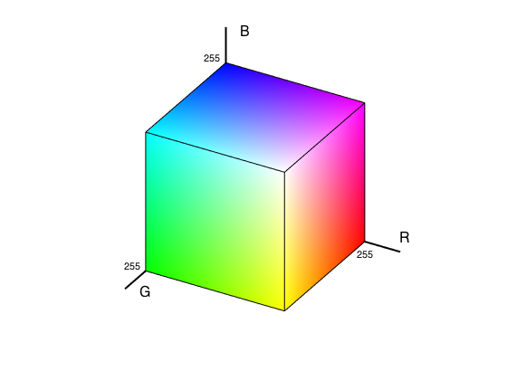
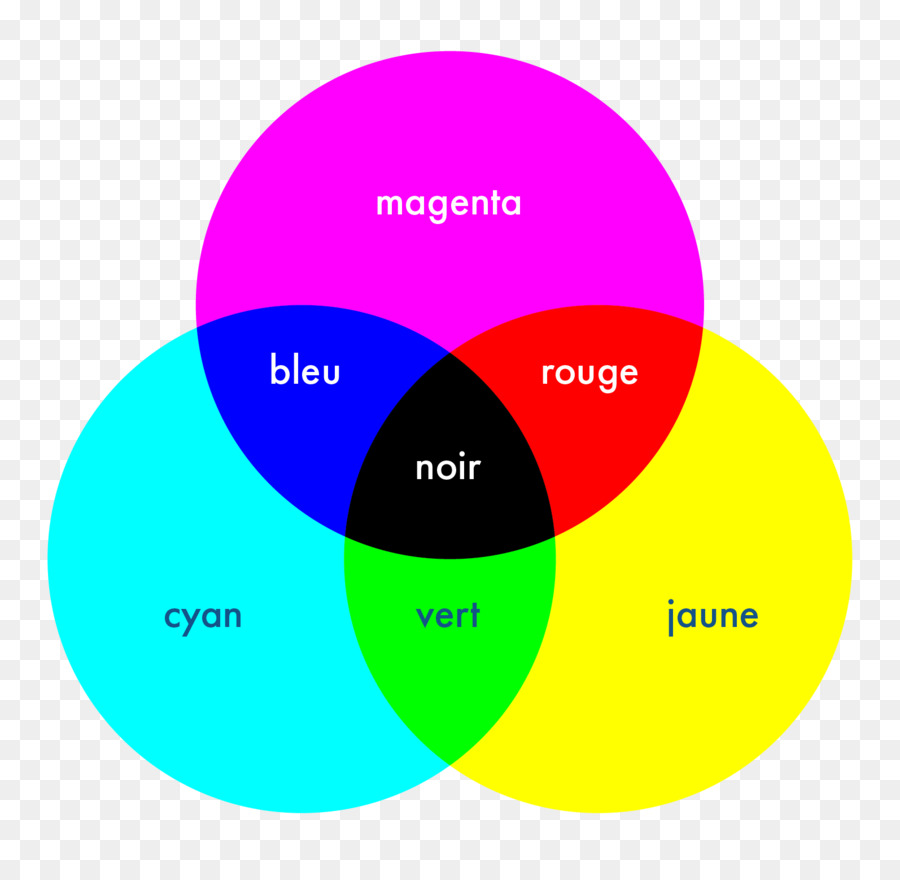
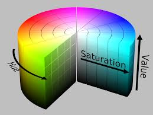

| RGB | |
|---|---|
|  | Цветовая модель RGB - цветовая модель, как правило, служащая для вывода изображения на экраны мониторов и другие электронные устройства. Каналы цвета определяют интенсивность красного / зеленого / синего. |
| CMYK | |
|---|---|
|  | Модель CMY`K - субтрактивная (subtract, англ. - вычитать) схема формирования цвета, используемая в полиграфии для стандартной триадной печати. Обладает меньшим, в сравнении с RGB, цветовым охватом. CMYK называют субстрактивной моделью потому, что бумага и прочие печатные материалы являются поверхностями, отражающими свет. Удобнее считать, какое количество света отразилось от той или иной поверхности, нежели сколько поглотилось. Таким образом, если вычесть из белого три первичных цвета - RGB, мы получим тройку дополнительных цветов CMY. |
| HSL | |
|---|---|
|  | Модель HSL H (hue - оттенок), S (saturation - насыщенность), L (lightness - светлота). На круге тона и насыщенности угол задает определенный тон, а радиус определяет насыщенность. Затем положение на этом круге совмещается с ползунком светлоты для определения итогового цвета. Для определения светлоты применяется цилиндрическая модель. |
| Lab | |
|---|---|
| Модель Lab Lab – в цветовом пространстве Lab значение светлоты отделено от значения хроматической составляющей цвета (тон, насыщенность). Светлота задана координатой L (от 0 до 100 – от самого темного до самого светлого); Хроматическая составляющая – двумя декартовыми координатами a (значение цвета в диапазоне от зеленого до пурпурного) и b (значение цвета в диапазоне от синего до желтого). Цвет в моделях RGB / CMYK может зависеть от многих показателей (тип печатной машины, марка красок, влажность воздуха на производстве, настройки монитора). Lab однозначно определяет цвет – благодаря этому, в Lab есть возможность отдельно воздействовать на яркость, контраст изображения и его цвет. | |